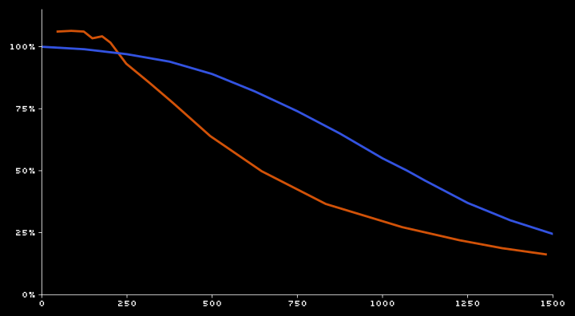

An Inquiry into Film Sharpness
All articlesOn modulation transfer functions, photochemical spatial response, and the digital emulation of film sharpness.
Chasing the ever so desirable film look, hundreds of plugins, and techniques have arisen for modern digital cameras to replicate the perceivable characteristics of a celluloid motion picture film. The look can be split into different components that all work interconnected with each other to create the final image: color response, grain, halation. An aspect I seldom see mentioned and is clearly overlooked is the sharpness of the image measurable by a MODULATION TRANSFER FUNCTION (MTF), being the focus of this inquiry.
What are we modulating? What are we transferring? The lens transfers the object scene onto the object image, the scene luminance has been transformed to the image illuminance. As the detail fineness is raised on the object scene, the loss in detail contrast will be raised in the transformed object image. The transferred contrast is being altered as it is moved into higher frequencies. The variation in detail contrast between the two is the transfer function MTF, a measurement of how contrast passes through from the object scene to the object image as it changes its spatial detail. The lens, the film negative stock, the print stock, the digital sensor, are all sample devices that create a MTF, and can have varying degrees of degradation on measurable contrast. The perceived picture sharpness of what you see when a screen is some distance away, is proportional to the square of the area under the MTF curve. (The actual visual perception of sharpness is weighted toward the lower spatial frequencies. MTF vs MTF² curves)
Picture edge sharpness is largely determined by how high the curve is at the lower frequencies, and picture textures are determined by the midband, which contribute very fine details and low amplitudes, while the resolving power is indistinguishable to humans in a cinematic frame.
The MTF measures how well an optical or film system transfers contrast from the subject to the final image across different spatial frequencies. Kodak supplies MTF measurements as a curve in their filmstock technical data. If this data can be acquired, it can be utilized as a goal to be matched for an accurate level of sharpness.
A film’s spatial response can be approximately matched digitally, and a measured spatial filter can do that without simulating every crystal or chemical reaction. The key is deriving the filter from measurements and validating its output. Since both MTF curves can be measured, that of a digital output and a film’s output, the ratio can be calculated. Provided enough data the problem becomes algebraic under a linear, shift-invariant approximation. With the solution determining necessary transformation from measurements to output an emulated filmic result from a digital input, in essence creating our own transformation whose response is described by a digital modulation transfer function.

CONCEPTUALLY, let’s say we have two different MTF curves, one is of a film print (B), which contains the combined spatial response of all the stages in the test (Camera lens, negative, development, printing optics, print stock). And then (A) is a digital image, combined of all of the stages in a digital pipeline. Both of which had the same scene input luminance, in a controlled setting, capturing a resolution test chart. From these samples, MTF data is individually measured and MTF curve charts are created. Mathematically the ratio can be determined, and create a repeatable formula to apply the same MTF curve from A to B, but in practice, how is this actually applied to the digital image?
Since the MTF is measured at a curve, having the de-sharpening technique applied at the same curve, instead of JUST merely a high and low frequency separation and applying a Gaussian blur to the high frequencies would be a more accurate way to apply the desired effect. A digital replication of softness is commonly a Gaussian blur effect. On an image this reduces high frequency components acting as a low pass filter, but this is applied to the entire selection, as a normal distribution. Even applying at a curve, it is still constructing a normal distribution, just along a curve, what the curve is measuring is not necessarily what a Gaussian blur is executing. Film relies on a physical suspension of irregularly shaped silver halide or dye crystals (grain) embedded in a gelatin emulsion. This random grain structure acts as a physical ceiling that blurs or breaks up ultra-fine details and is the method for which some of the softening is achieved through emulsion.
These methods of adding a universal blur, even if it is confined to the MTF curve, the actual application of that BLUR is commonly determined with subjectivity and not empirically or accurately.
Film emulations, or simulations rather, may develop their grain algorithms in such a way to imitate this chemical process of silver crystals, mathematically. The forthcoming in these algorithms is that they do not always encompass a production of the desired measurable filmic softness. If two MTF curves were to be created identically, with the only difference being a digital image capture and a motion picture film exposure, carefully with the same lens, distance, exposures, focus, and sizes, the film exposure will have a different MTF curve, the question then becomes how can this be replicated in a digital postproduction pipeline. For film, high frequency information is lost during exposure (scattering + halation), low to mid frequency acutance is raised during development (DIR couplers), grain reintroduces high frequency information back, and a scanner optical system degrades the image again. In other words, the deeper the analog pipeline is, the more scene information is replaced by emulsion information.
This photochemical reaction is not equivalent to a normal distribution of a blur, as the film is exposed then developed, and printed, multiple MTFs are occurring.
In all reality, this model is limited by treating film’s spatial response as one fixed filter. Acting independent of exposure, halation, and grain. So it could not be used alone for an accurate representation. If it were to be used in a post production film look pipeline I propose it would be a reasonable design choice for a spacial filter to be applied after halation and color response, but before grain. These could act as nodes in a OFX/Nuke pipeline, provided that they exchange the information they need and are calibrated as a complete system. Separate does not mean they act completely independently, and they ought not to be completely linear as to allow data and supplication of controls to affect model parameters between separate processes.
Simulating the Photographic Development Process on Digital Images